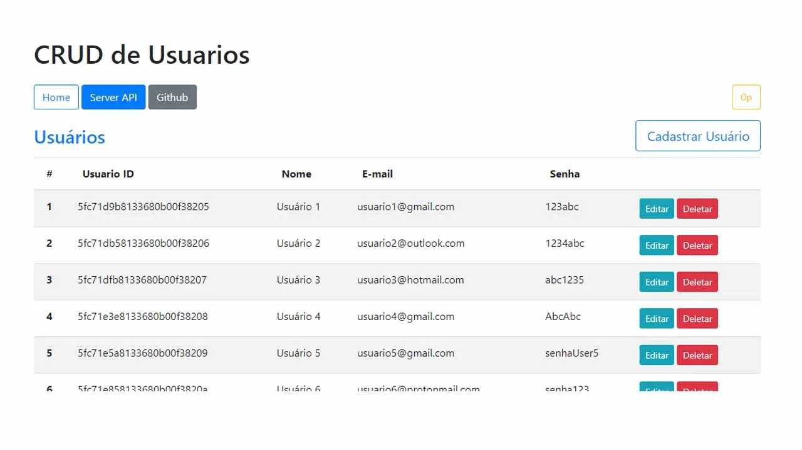

Crud Application :
CRUD Meaning: CRUD is an acronym that comes from the world of computer programming and refers to the four functions that are considered necessary to implement a persistent storage application: create, read, update and delete. Code Here
TICTACTOE PROJECT :
Tic-Tac-Toe is a two-player game in which the players fill up nine empty rectangles in a table with either an X or an O when it is their turn. Once someone succeeds to line up their sign vertically or horizontally without an interruption, that player wins Code Here